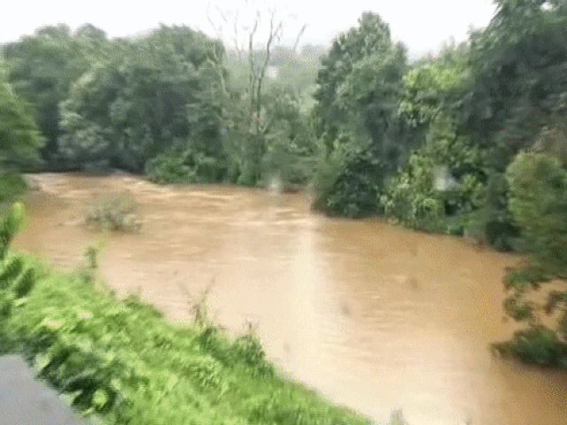
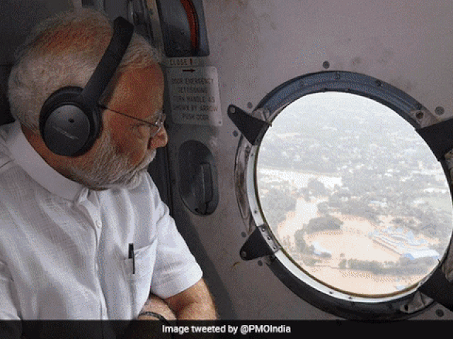
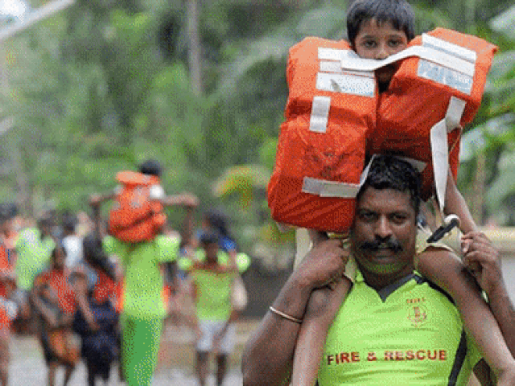
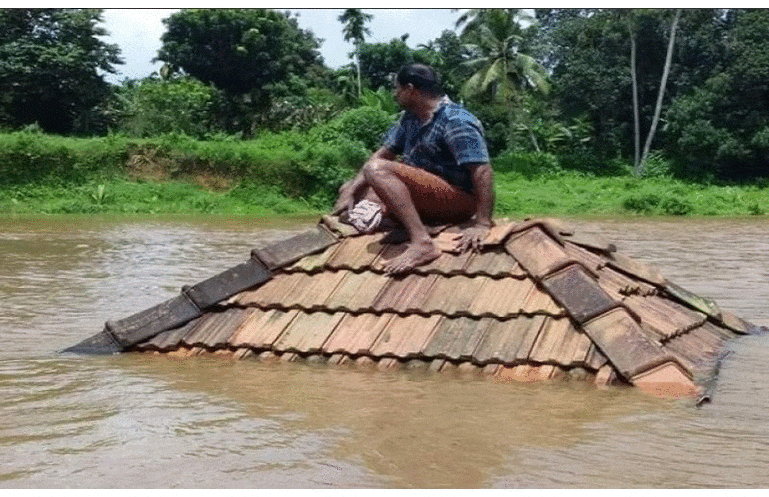
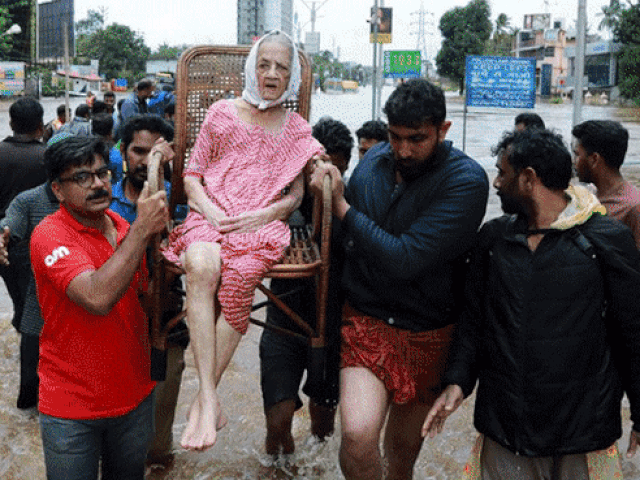
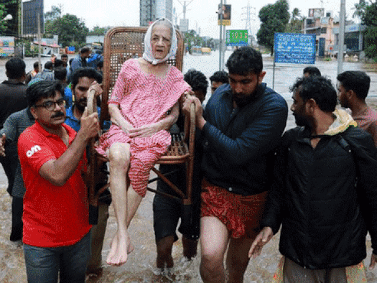
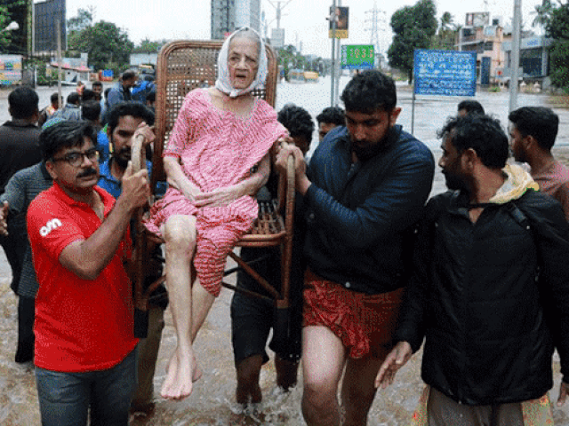

Kerala Flood
KERALA FLOOD 2018
Kerala received heavy monsoon rainfall
KERALA FLOOD
We the Keralites are facing the biggest natural disaster we have ever seen and the destruction has not stopped yet.
In late July 2018, severe flooding affected the Indian state of Kerala due to unusually high rainfall during the monsoon season. It was the worst flooding in Kerala in nearly a century, in which over 373 people died within a fortnight, while at least 280,679 people were evacuated, mainly from Chengannur, Pandanad, Aranmula, Aluva, Chalakudy, Kuttanad and Pandalam. All 14 districts of the state were placed on high alert. According to Kerala government sources, one-sixth of the total population of Kerala had been directly affected by the floods and related incidents. Thirty-five out of the forty-two dams within the state were opened for the first time in history. All five overflow gates of the Idukki Dam were opened at the same time, for the first time in 26 years.[10] Heavy rains in Wayanad and Idukki have caused severe landslides and have left the hilly districts isolated. The situation was regularly monitored by the Prime Minister and the National Crisis Management Committee coordinated the rescue and relief operations. Responding to the chaos around the issue of rejecting foreign assistance to the Kerala floods, the government of India, in line with the existing foreign as well as domestic policy, made it clear that it won't accept any assistance from foreign governments but is fully committed to the relief and rehabilitation by domestic resources and efforts. However, it accepts all sorts of contributions as well as humanitarian aid from individuals, NGOs and PIOs world wide.
In late July 2018, severe flooding affected the Indian state of Kerala due to unusually high rainfall during the monsoon season. It was the worst flooding in Kerala in nearly a century, in which over 373 people died within a fortnight, while at least 280,679 people were evacuated, mainly from Chengannur, Pandanad, Aranmula, Aluva, Chalakudy, Kuttanad and Pandalam. All 14 districts of the state were placed on high alert. According to Kerala government sources, one-sixth of the total population of Kerala had been directly affected by the floods and related incidents. Thirty-five out of the forty-two dams within the state were opened for the first time in history. All five overflow gates of the Idukki Dam were opened at the same time, for the first time in 26 years.[10] Heavy rains in Wayanad and Idukki have caused severe landslides and have left the hilly districts isolated. The situation was regularly monitored by the Prime Minister and the National Crisis Management Committee coordinated the rescue and relief operations. Responding to the chaos around the issue of rejecting foreign assistance to the Kerala floods, the government of India, in line with the existing foreign as well as domestic policy, made it clear that it won't accept any assistance from foreign governments but is fully committed to the relief and rehabilitation by domestic resources and efforts. However, it accepts all sorts of contributions as well as humanitarian aid from individuals, NGOs and PIOs world wide.





.gif)
 


Kerala received heavy monsoon rainfall on the mid evening of August 8 resulting in dams filling to capacity; in the first 24 hours of rainfall the state received 310 mm (12 in) of rain. Almost all dams have been opened since the water level has risen close to overflow level due to heavy rainfall, flooding local low-lying areas.For the first time in the state's history, 35 of its 42 dams have been opened.Most of the regions affected by this monsoon were classified as ecologically-sensitive zones (ESZs) by the the Western Ghats Ecology Expert Panel, the Gadgil Committee. Most of the recommendations and directions by the commitee was either neglected or rejected. Chairman of the committee Madhav Gadgil accused the state government and its irresponsible environmental policy for the recent landslides and floods. He called it a man-made calamity.The state government of Kerala argued in the Supreme Court that the sudden release of water from the Mullaperiyar Dam by the Tamil Nadu government was one of the reasons for the devastating flood in Kerala.